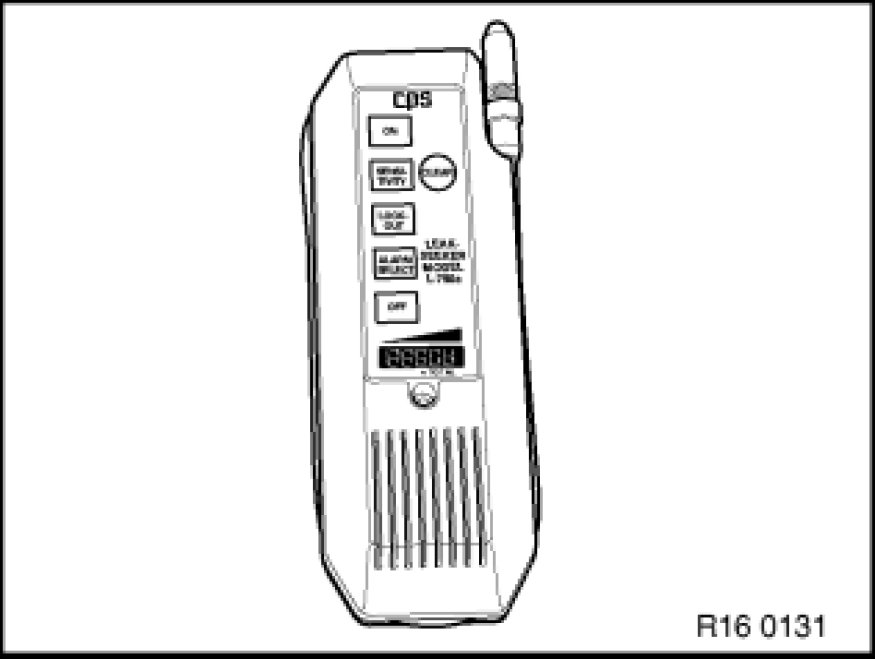

Conducting Leak Test on Fuel Tank and Tank Venting System
16 00 510 - Conducting leak test on fuel tank and tank venting system

Important!
On vehicles with tank leak diagnosis modules (DMTL), do not work with external pressurization as the tank ventilation system will leak under this condition.
On account of emerging fuel vapors, carry out all work in well ventilated rooms. Or use a suitable extractor system.
Observe country-specific accident prevention and occupational safety regulations.

Note:
The following procedure is only applicable to vehicles with the tank leak diagnosis module (DMTL).
For vehicles without tank leak diagnosis module:
Pressurize fuel tank and tank venting system. Checking Fuel Tank and Tank Ventilation System for Leaks
During the leak test with a leak detector, be sure to follow the operating instructions of the equipment manufacturer.

Note:
Select "Tank leak diagnosis module (DMTL)" on Diagnosis and Information System (DIS).
- The leak diagnosis pump pressurizes the fuel tank and tank ventilation system for 30 sec.
- If pressure is needed for longer than 30 sec., press "Activate" button again after 30 sec.

The leak test can be carried out with a leak detector.
Possible causes may be:
- - Tank cap leaking (check tank cap pressure relief valve) Testing and Inspection.
- - Tank venting lines leaking (fuel tank - carbon canister - tank venting valve).
- - Tank vent line leaking (engine compartment).
- - Fuel level sensor flange on tank leaking.